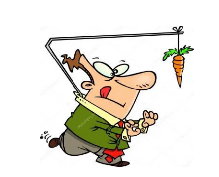
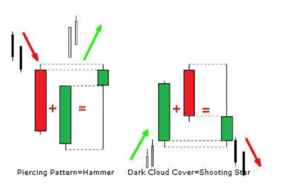
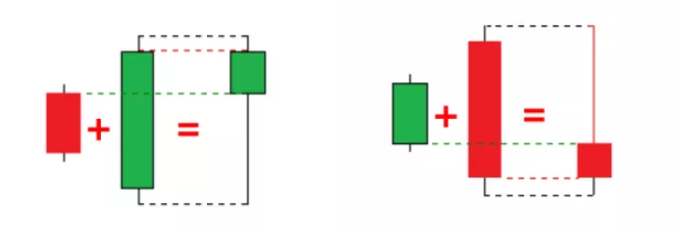
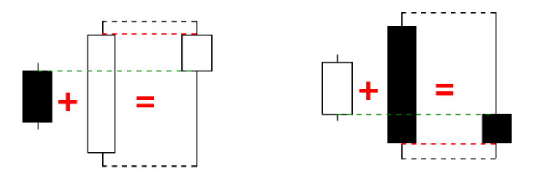
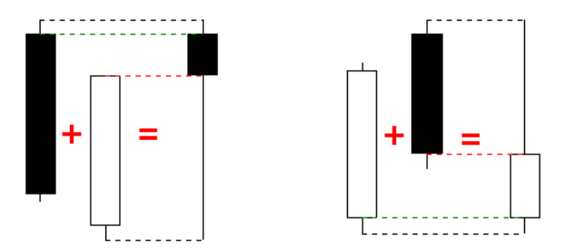

장중에 나타나는 여러개의 캔들을 하나로 합쳐서 볼 줄 알면 매매에 많은 도움이 됨
특히 추세전환 신호인 긴꼬리 Doji 나 Pin Bar를 찾아낼 수 있으면
수많은 캔들패턴중에 가장 신뢰도가 높고 매매에서 믿고 쓸 수 있는 패턴이 긴꼬리 Pin Bar와 doji 라 할 수 있다
장중에서 선명하게 이런 캔들이 나타날 때도 있지만 어떨땐 두개의 캔들스틱을 합치면 비로서 이런 pin Bar나 Doji로 보일 때도 있다.
평소에 연습해서 빠르게 움직이는 장세에도 이런 좋은 패턴을 빨리 읽어내는 기술을 훈련해야 한다


Engulfing to Hammer

Dark Cloud to Hammer

Morning Star to Doji

1-31-2018 ZB 2100 Tick Chart